Photo Gallery
A Walk Through Sigang
校園剪影 · 一所沿海小校的日常
Coastal campus, classroom touch-screens, VR practice, the Hope Reading bookmobile, and one summer day in July.

From the coastal campus to the classroom touch-screens, the VR conversation practice and the bookmobile that finds us at the end of every road — this is what daily life at Sigang actually looks like. 從沿海校園、課堂上的觸控大電視、VR 對話練習，到一路找到我們的書車——這是西港日常的真實樣貌。
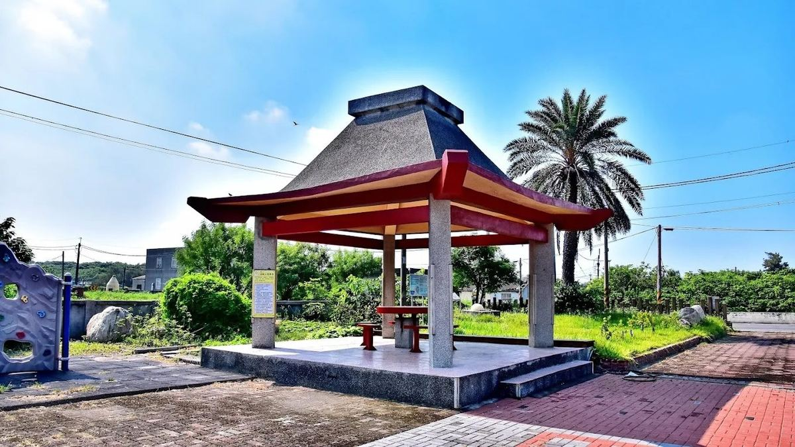
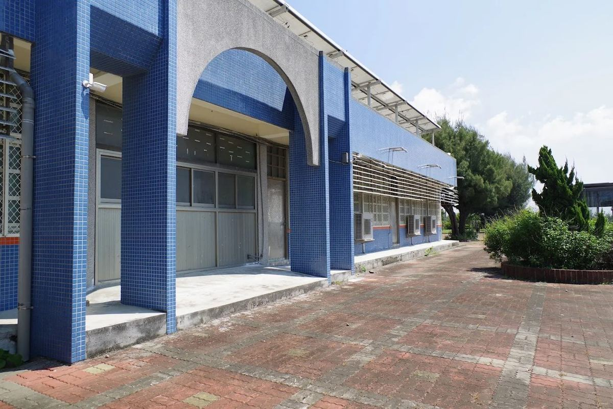
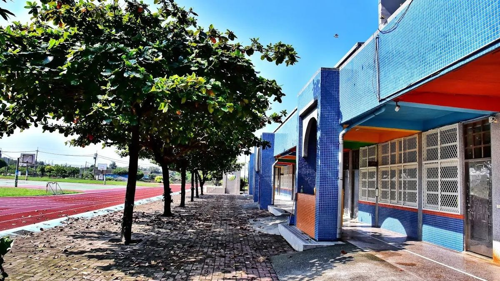
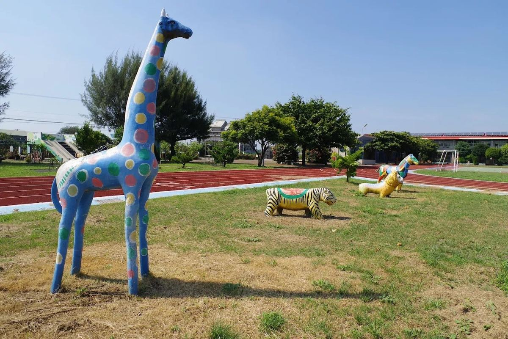
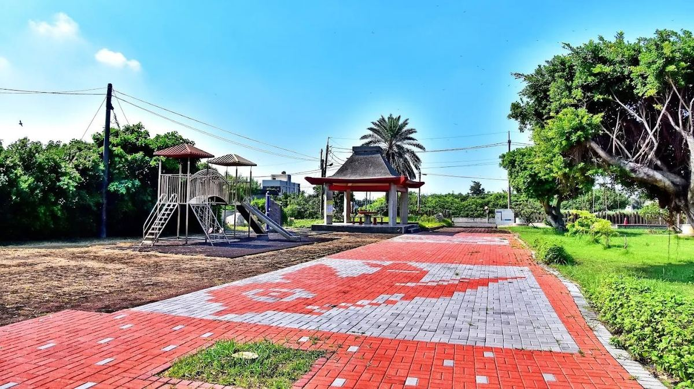
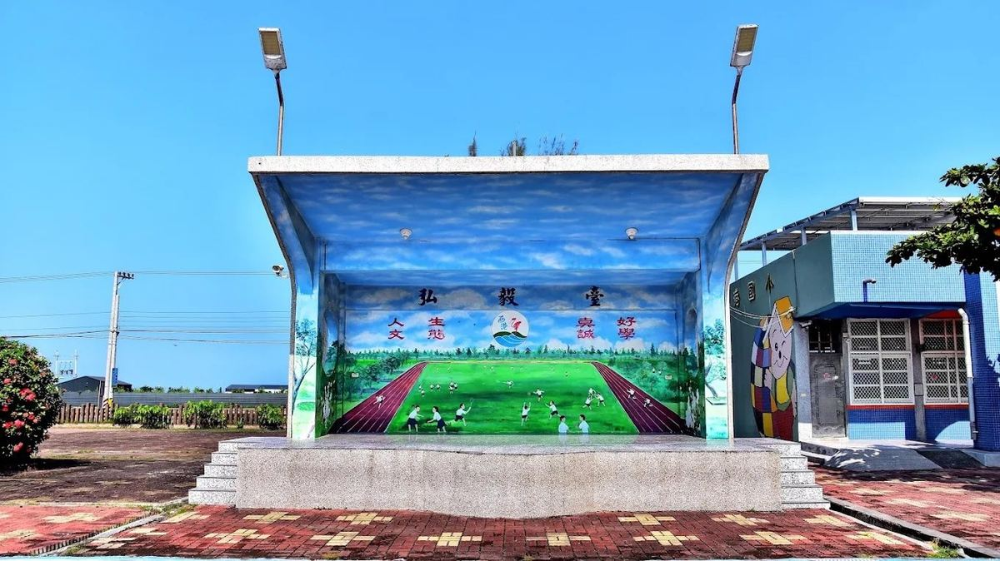
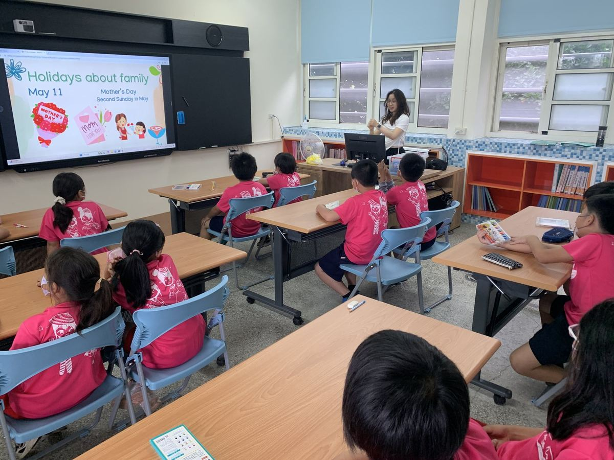
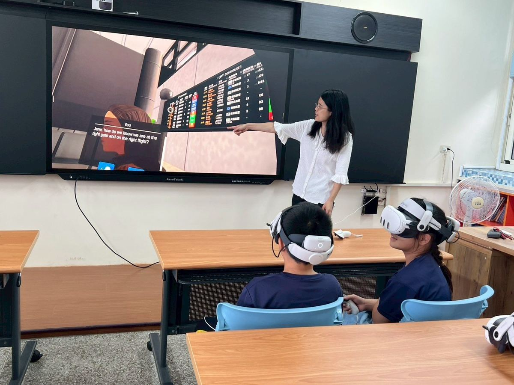
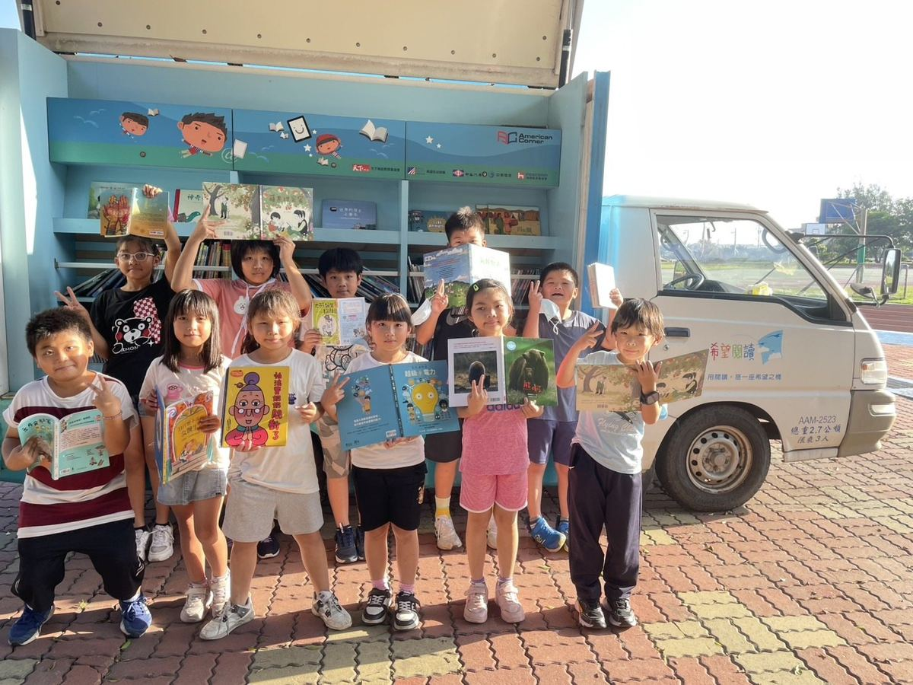
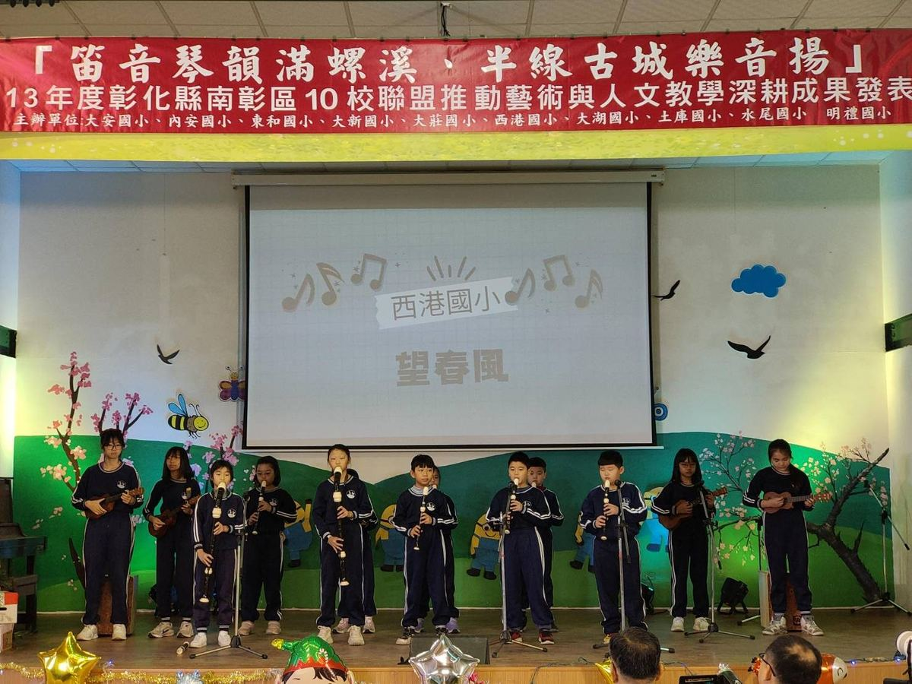
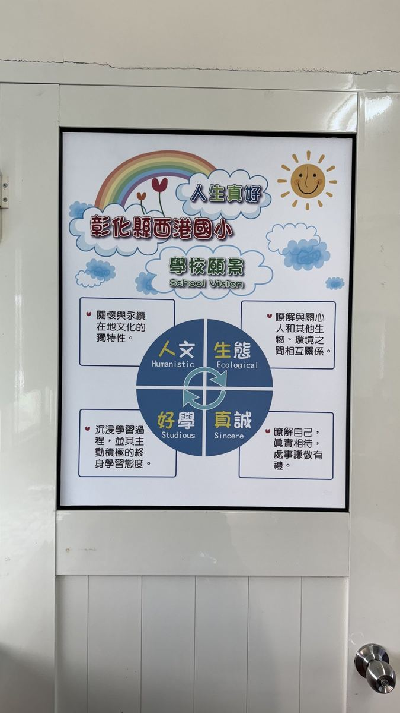
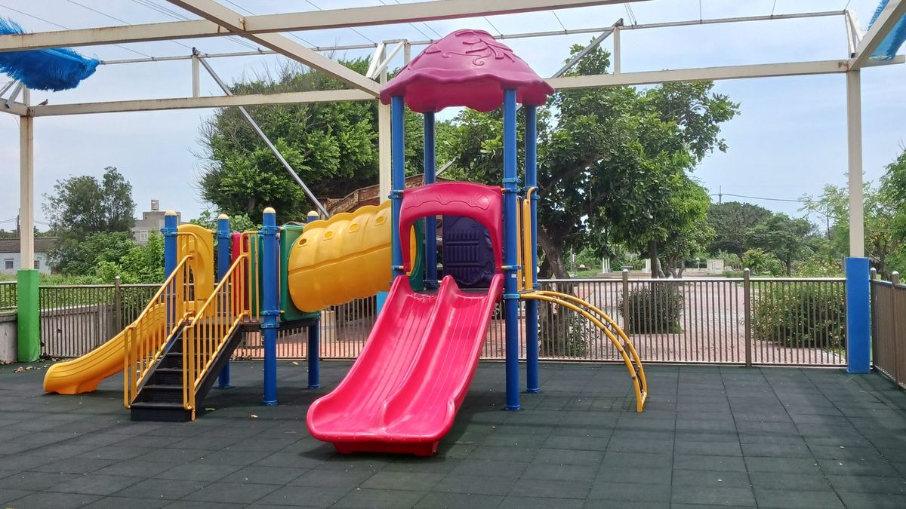
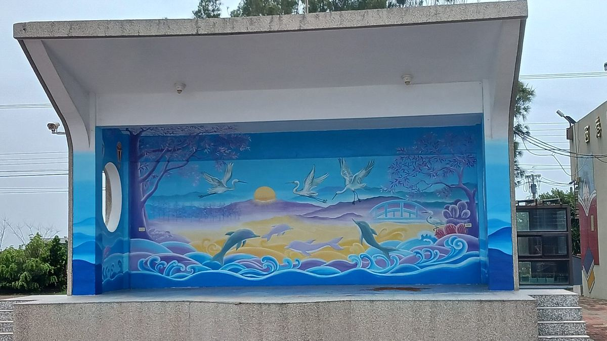
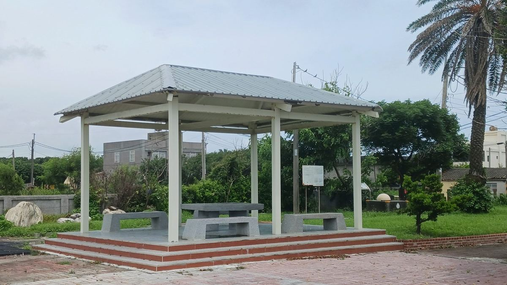
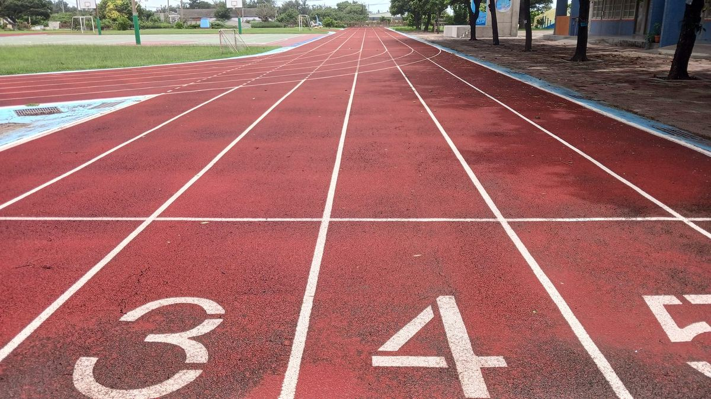